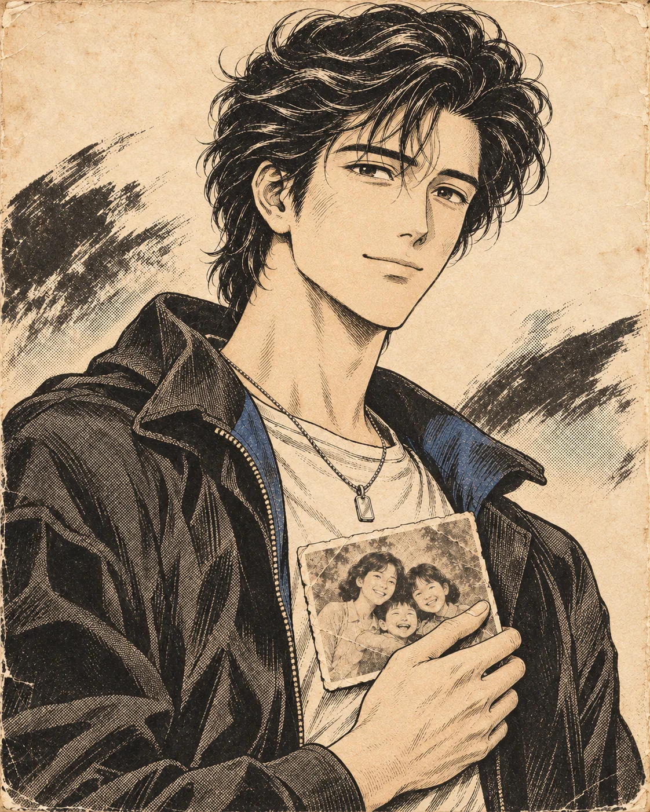

가까이 있던 사람들
우리 이야기의 첫 번째 주인공.
소중한 것을, 오래 남기는 일
어릴 때부터 가족과 참 가까웠습니다.
그 마음을 오래오래 남기고 싶어서,
우리는 이야기를 만들고 게임을 만듭니다.

第一章 / THE ORIGIN
01 — 우리의 시작멋진 이야기는
멀리 있지 않았습니다.
어릴 때부터 가족과 사이가 참 좋았습니다.
함께한 시간을 돌아볼수록, 이 마음을 오래오래
남겨 두고 싶다는 생각이 들었습니다.
파랑버섯 스튜디오는 그 마음에서 출발했습니다.
누군가에게는 웃음이 되고, 누군가에게는
가까운 사람을 떠올리게 하는 게임을 만듭니다.
파랑버섯 스튜디오 記
우리 이야기의 첫 번째 주인공.
평범해서 더 소중했던 마음.
함께 웃을 수 있는 다음 장.
第二章 / OUR FIRST GAME
02 — 첫 번째 작품개발 중 · Android
父親戰爭
아들 한마디에,
아빠가 날아간다.
아들의 장난에 학교로 달려온 아빠.
다른 아빠들과 마주친 복도는 어느새 전쟁터!
당기고, 날리고, 한 번 더 돌진하세요.
정식 출시 전 테스트 단계입니다.
기기 호환성과 플레이 경험을 다듬고 있습니다.

PLAY NOTES
한 손으로 펼치는 대소동손을 놓는 순간 아빠가 날아갑니다.
벽과 상대를 잇는 각도를 찾아보세요.
비행 중 원하는 방향을 탭하세요.
추가 돌진으로 흐름을 바꿀 수 있습니다.
스테이지를 깨고, 별을 모으고,
오늘의 도전에 다시 나서세요.

第三章 / KEEP IN TOUCH
03 — 다음 이야기를 함께一期一會
게임 이야기, 협업 제안, 짧은 인사까지.
보내 주신 이야기를 기다립니다.
AN AFTERWORD / 後記
We have always been close to our family. Bluemushroom studio began with a simple wish: to keep those memories alive, for a long, long time. We turn that affection into stories and games.
Our first game, Dad War, is a one-handed casual action game for Android, currently in development.